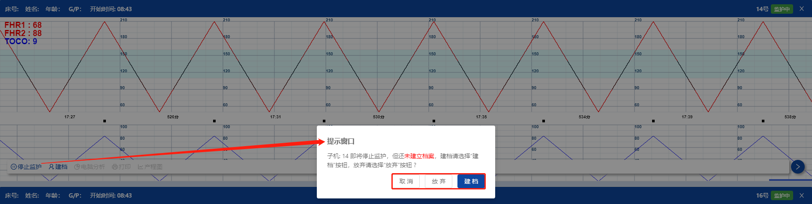
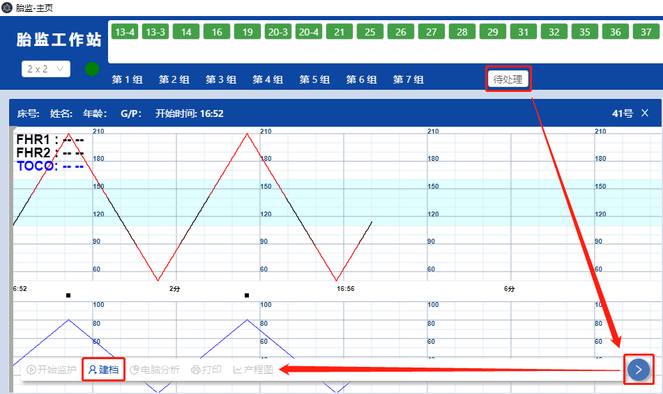

1. 流程逻辑
扫描操作
系统支持扫描的机型有：PDA设备，安卓手机扫描程序apk。
使用设备扫描，能代替平台操作，可起到：自动开始监护、自动建档孕妇、自动停止监护 的效果。
st=>start: start
cond1=>condition: 第一次
扫描盒子
op1=>operation: 自动开始监护
cond2=>condition: 第二次
扫描手环
op2=>operation: 自动建档孕妇
cond3=>condition: 第三次
扫描盒子
op3=>operation: 自动停止监护
op4=>operation: 成功保存
历史档案
en=>end: end
st->cond1->op1->cond2->op2->cond3->op3->op4->en
cond1(yes)->op1
cond2(yes)->op2
cond3(yes)->op3
手动停止
监护过程中，建档步骤可能会漏做。若医护人员手动停止监护，逻辑有以下差别。
st=>start: start
op0=>operation: 自动/手动/扫描
开始 监控
op1=>operation: 扫描 / 录入建档
（可能漏做）
op2=>operation: 手动停止监护
cond1=>condition: 【有否建档? 】
no—》弹框提示
yes—》保存档案
cond2=>condition: 【放弃保存？】
no—》补充建档
yes—》放弃存档
op3=>operation: 成功保存
历史档案
en=>end: end
op4=>operation: 设备断电关机
st->op0->op1->op2->cond1->op3->en
cond1(yes)->op3
cond1(no)->cond2
cond2(yes)->en
cond2(no)->op1
普通流程：先按【开始监护】再按【建档】最后【停止监护】，档案将在保存在【档案管理】中。
特殊流程：先按【开始监护】但未【建档】就按【停止监护】，会弹框提示： 
取消：不会停止，返回至监控状态。
建档：弹出建档页面，立即补充建档。
放弃：系统不会保存在【档案管理】，而是暂时缓存到分组tab页最右方【待处理】，可后续补充建档。

断电关机
监护过程中，建档步骤可能会漏做。若医护人员中途断电关闭胎监设备，逻辑有以下差别。
st=>start: start
op0=>operation: 自动/手动/扫描
开始 监控
op1=>operation: 扫描 / 录入建档
（可能漏做）
op2=>operation: 手动断电关机
cond1=>condition: 【有否建档? 】
no—》忘记建档
yes—》已经建档
cond2=>condition: 【待处理tab】
no—》补充建档
yes—》放弃存档
op3=>operation: 自动保存
历史档案
en=>end: end
op4=>operation: 待处理tab
st->op0->op1->op2->cond1->op3->en
cond1(yes)->op3
cond1(no)->cond2
cond2(yes)->en
cond2(no)->op1
普通流程：先按【开始监护】再按【建档】最后【关机断电】，档案将在保存在【档案管理】中。
特殊流程：先按【开始监护】但未【建档】就做【关机断电】，档案会暂时缓存到分组tab页最右方【待处理】，请到里面补充建档。
网络离线
监护过程中，胎监设备可能会印因网络环较差而导致离线。
当设备重新上线后，无论是否有建档，缺失的曲线都会在后面追加，重新补回离线期间的形态。